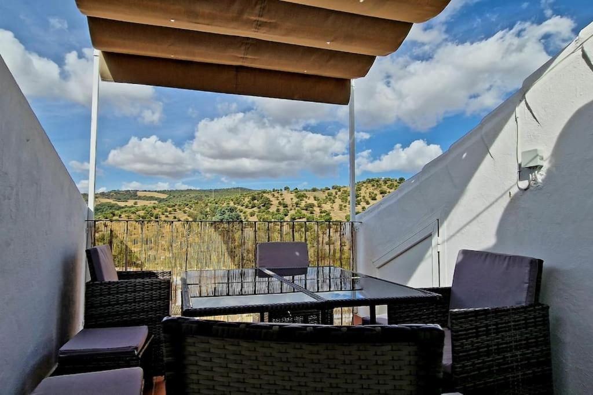
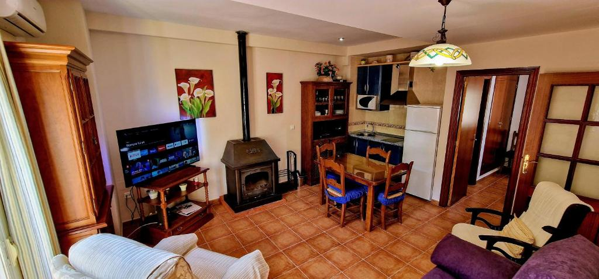
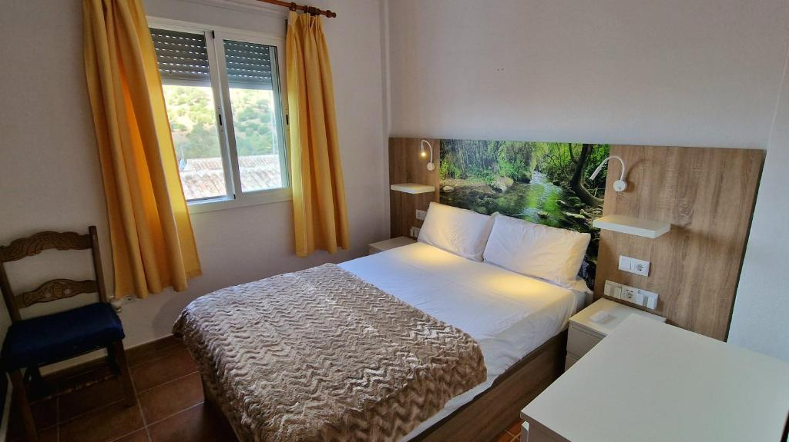
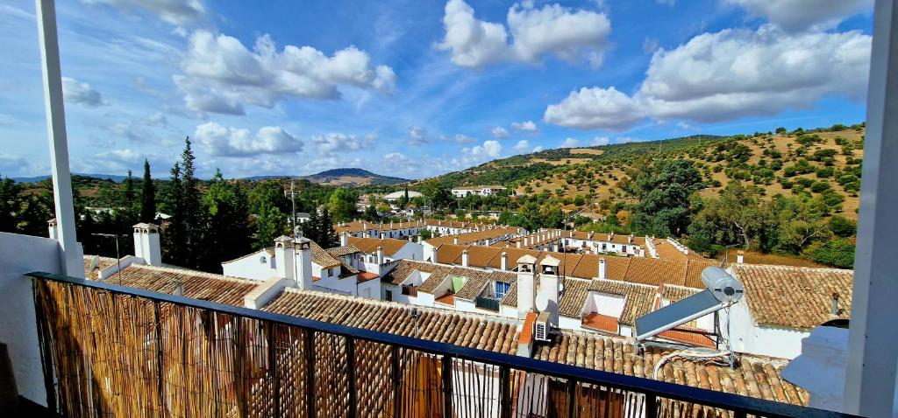
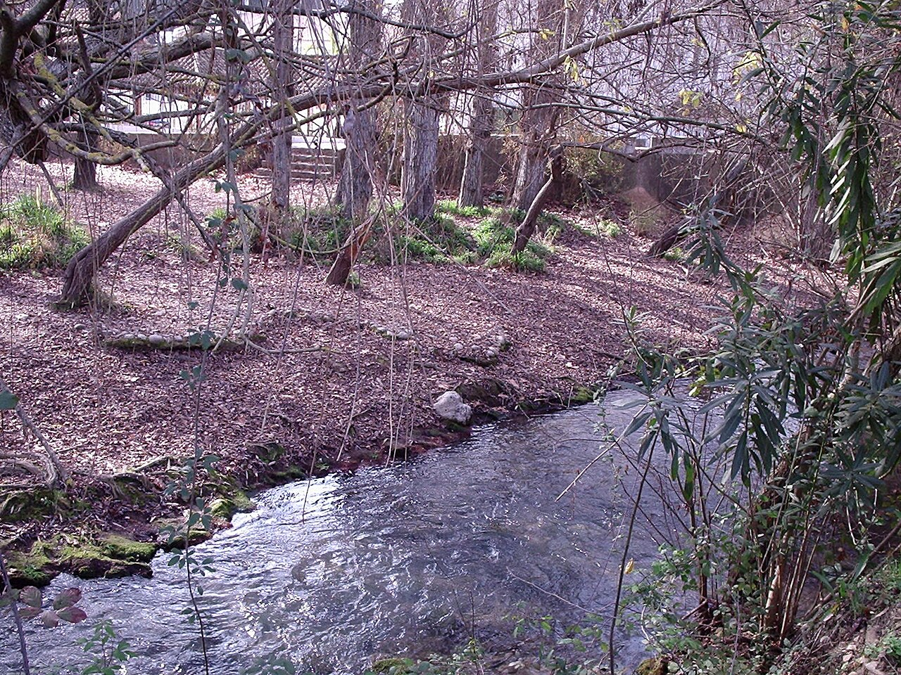

El Bosque, CádizALOJAMIENTO TURÍSTICO
La Terracita
del Bosque
Tu estancia en un pueblo blanco de Cádiz.
La terraza de La Terracita del Bosque.
CONOCE LA TERRACITA
Una estancia en El Bosque.
Un viaje a tu ritmo.
La Terracita del Bosque es un alojamiento turístico en El Bosque, Cádiz. Aquí empieza tu visita a una localidad de casas blancas, rodeada de valles y junto al río Majaceite.
Para conocer los espacios, el equipamiento y las condiciones de la estancia, consulta la ficha del alojamiento en Booking.
Información para tu reservaESPACIOS DEL ALOJAMIENTO
Una mirada a La Terracita.
Conoce el alojamiento a través de sus fotografías.




DESCUBRE EL BOSQUE
El encanto del pueblo.
La naturaleza, alrededor.
Entre calles blancas, fuentes y flores, El Bosque invita a conocer otra cara de Cádiz. El paisaje de la sierra forma parte del viaje.
El río Majaceite
Agua y vegetación junto a la localidad.
Jardín botánico El Castillejo
Una muestra de los ecosistemas de la Sierra de Grazalema.
Propuestas para explorar por tu cuenta; no son servicios del alojamiento.
UBICACIÓN Y RESERVAS
Tu próxima estancia
en La Terracita del Bosque.
11670 El Bosque, Cádiz, España
Ver la localidad en el mapa (abre en una pestaña nueva)El mapa muestra la localidad, no la dirección exacta del alojamiento.¿Cuándo te apetece venir?
Consulta las fechas disponibles, los precios y las condiciones de reserva en Booking.
Consultar disponibilidad en Booking (abre en una pestaña nueva)Reserva gestionada en Booking.com